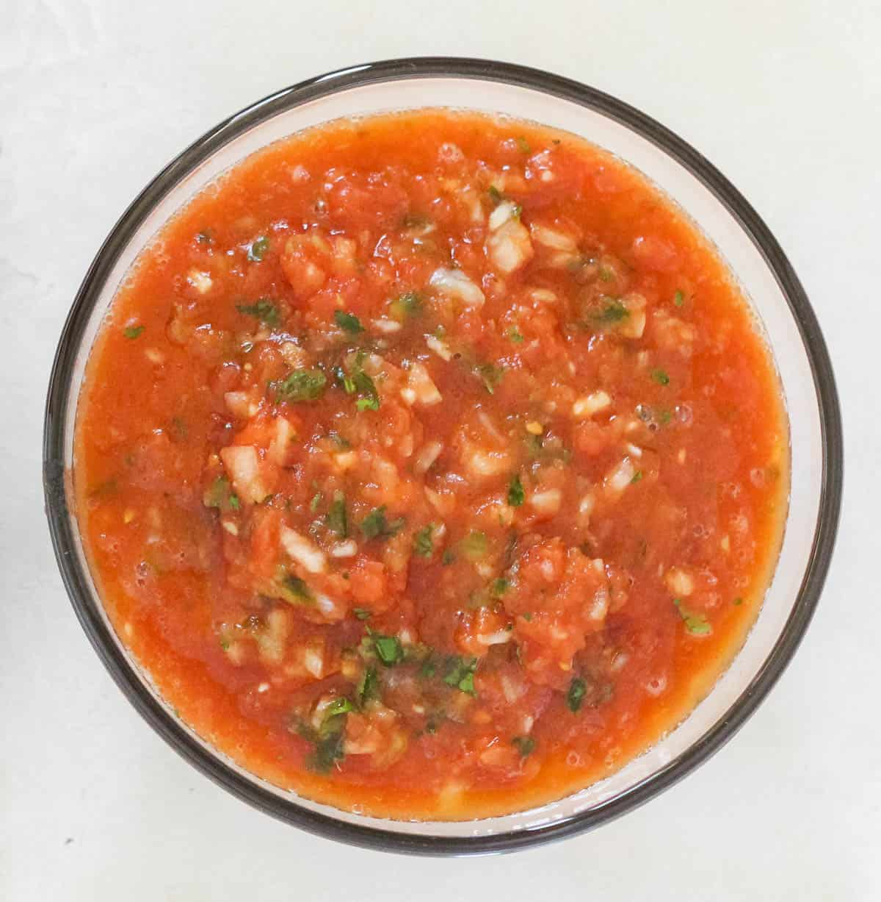

Ingredients
- 1 medium onion, roughly chopped
- 3-4 cloves garlic, chopped
- ¼ cup cilantro or parsley
- 1 small jalapeño, diced
- 2 (14.5 ounce) cans no-salt-added diced tomatoes, undrained
- ¾ teaspoon salt *see notes
- 2 teaspoons lime juice or lemon juice, apple cider vinegar or white vinegar
Steps
- In the bowl of a food processor, add the onion, garlic, cilantro, jalapeño, and tomatoes with their juices. Pulse until it reaches the consistency you prefer for your salsa.
- Transfer to a plastic or glass bowl, and stir in the salt and vinegar or lime juice.
- Refrigerate for at least 4 hours, so the flavors can meld together.
- Taste and adjust seasoning if needed.
- Enjoy with chips, over omelets, with fish or chicken - the options are endless!
Special Equipment Needed
- Large stockpot with a heavy, tight-fitting lid
- Fine-mesh strainer
NUTRITION FACTS (PER SERVING)
- Calories: 13
- Fat: 0.1g
- Saturated Fat: 0.01g
- Polyunsaturated Fat: 0.03g
- Monounsaturated Fat: 0.01g
- Sodium: 115mg
- Potassium: 114mg
- Carbohydrates: 3g
- Fiber: 1g
- Sugar: 2g
- Protein: 1g